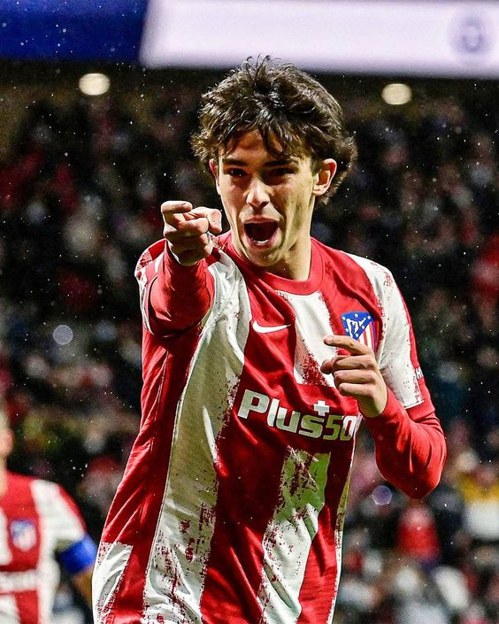
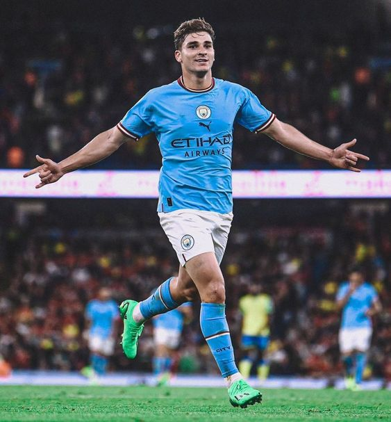
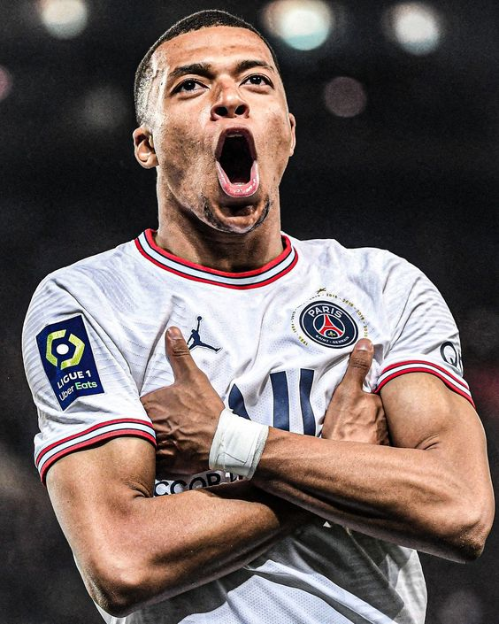

THE STAT LEADERS AFTER :
MATCHDAY ONE
Goals
| Joao Felix | 2 Goals |
|---|---|
| Julian Alvarez | 2 Goals |
 Wenderson Galeno Wenderson Galeno | 2 Goals |
Expected Goals(xG)
| Kylian Mbappe | 1.2 xG |
|---|---|
 Erling Haaland Erling Haaland | 1.1 xG |
| Joselu | 1.1xG |
Chances Created
| Julian Alvarez | 7 Chances Created |
|---|---|
| Rade Krunic | 7 Chances Created |
| Lucas Vazquez | 6 Chances Created |
Big Chances Missed
| Erling Haaland | 4 Big Chances Missed |
|---|---|
| Rodrygo | 3 Big Chances Missed |
| Gabriel Jesus | 2 Big Chances Missed |